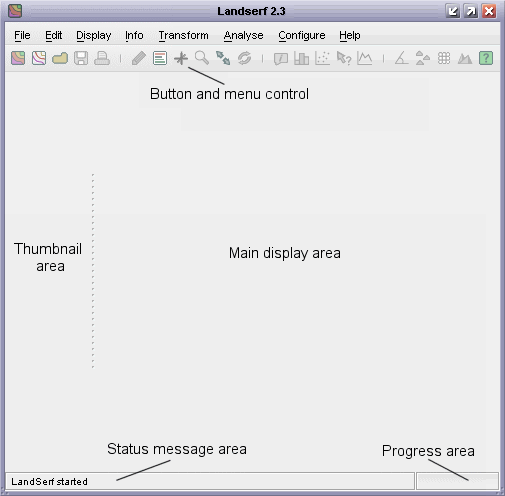
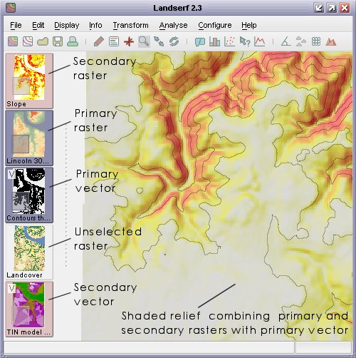
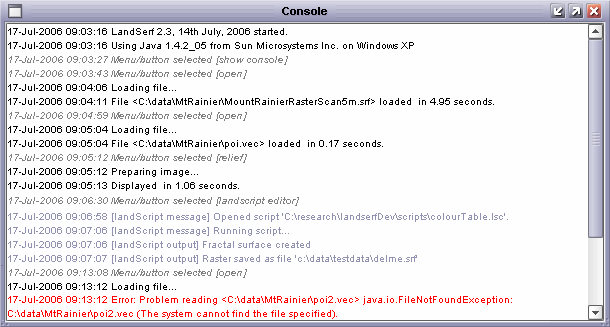

LandSerf allows you to visualise and perform analysis on spatial data. It is primarily designed to be used with surface and elevation models, but will work with most types of 'GIS' data. It currently supports raster DEM and vector TIN, contour and metric surface network models of elevation. What makes the software unique, is the ability to perform surface analysis over a range of scales, and characterise any scale dependent behaviour.
Depending on your operating system, you can start LandSerf in a number of ways:
| Platform | Start menu | Screen icon | Command line |
| Windows (95/98/NT/2000/XP/Vista) | Yes | Yes (double-click icon on desktop) | Yes (LandSerf.bat) |
| Linux | No | No | Yes (landserf.sh) |
| MacOSX | No | Yes (double-click the LandSerf icon in the Applications folder) | Yes (landserf.sh) |
By starting from the command line, various command line parameters can also be provided that will
start LandSerf with raster and/or vector files preloaded. The options are given below, where names in <triangular_brackets>
should be substituted with an appropriate file name and the | symbol indicates alternative options.
| Command line parameter | Explanation |
surface|primary <raster_file>|<vector_file> | Starts with the given file loaded as a primary object. |
drape|secondary <raster_file>|<vector_file> | Starts with the given file loaded as a secondary object. |
raster <raster_file> | Starts with the given file loaded as an unselected raster. |
vector <vector_file> | Starts with the given file loaded as an unselected vector map. |
display raster|relief|clear|vector | Starts with the given display type. |
numeric true|false | Enables or disables numeric display of raster values. By default these are not displayed. |
experimental true|false | Enables or disables extra experimental functionality (used for testing). By default experimental functionality is turned off. |
| Examples: | |
LandSerf primary c:\data\mountains.srf secondary "c:\My Images\photo.jpg" display relief numeric true | |
Start LandSerf (in Windows) with the file mountains.srf displayed as a shaded relief map with the image photo.jpg draped over it and numeric cell values displayed if user zooms in. | |
./landserf.sh vector ~/data/coast.vec primary ~data/landuse.shp display vector | |
Start LandSerf (in Unix) with the files coast.vec and landuse.shp pre-loaded, with the second of these displayed. | |
You can also start a LandScript engine (see LandScript documentation) for editing and processing script files. While this is available from the standard LandSerf application, it can also be started as a separate program from the command line:
| Platform | Command line |
| Windows (95/98/NT/2000/XP/Vista) | landscript.bat [-gui] <landscript_file.lsc> |
| Linux | landscript.sh [-gui] <landscript_file.lsc> |
| MacOSX | landscript.sh [-gui] <landscript_file.lsc> |
| Examples: | |
landscript.bat c:\scripts\combineRasters.lsc | Process the script combineRasters.lsc (on a Windows platform). |
landscript.sh -gui | Start the graphical LandScript editor on a Linux or MacOSX platform. |
If the -gui option is used, a window containing the LandScript editor is created. If not, the given
file landscript_file.lsc is processed.
The software is largely controlled via a series of menus or buttons that either perform actions or open further dialogue boxes. Graphics appear in the main area of the window, while 'thumbnail' images of all loaded data appear in the left-hand area. The status of the system is reported at the bottom of the window. The entire window can be resized at any stage with all graphics being rescaled accordingly.
For processing that is likely to take some time, a 'percentage complete' bar is displayed in the bottom
right-hand corner. Any process can be stopped by clicking on this bar.

LandSerf's initial screen.
MacOS X users have the additional option of selecting the native 'Aqua' look and feel. The arrangement of the main windows is identical, but the menu is placed at the top of the screen in common with other MacOS X applications.
LandSerf can store any number of raster or vector maps (known collectively as spatial objects), limited only by the memory of the computer. Much of the raster analysis and display is applied to the current primary raster and possibly a secondary raster. To select a primary raster, click on the relevant thumbnail with the left mouse button. The primary raster is indicated by the highlighted blue thumbnail image. Secondary raster selection can be made by clicking on a thumbnail with the right mouse button or with the left button while holding down the shift key. It is indicated by a pink thumbnail background. Note that the vertical order of thumbnails does not determine their primary/secondary status.
The same selection rules apply to vector maps. Primary vectors are selected with the left mouse button, secondary with the right (or mouse button with the shift key held down). Thumbnail images of vector maps can be distinguished by the 'V' symbol in the top-left corner.
When zooming in and panning within the main display area, the current display is highlighted on any primary or secondary spatial objects.
The range of visualisation and analysis options available will depend on the number and type of spatial
objects that have been been selected.

Spatial object selection.
LandSerf keeps a record of all options chosen by the user as well as any messages displayed in the
status bar at the bottom of the screen. This can be useful if you wish to recall a sequence of
operations previously undertaken. The record is stored in a file called landserfLog.txt in
the main LandSerf directory. This file is reset every time a new session is started. Additionally, the
logging output is echoed to the LandSerf console (see figure below), which can be viewed at any
time by selecting the Help->Show console menu option. The console will colour-code output
depending on its source. Menu and button selections are shown in grey italics, errors in red, status bar
messages in black and script output in blue italics.

LandSerf console output.
Any errors that stop LandSerf from working correctly are also reported to the console/log file. If these
errors appear to be a bug with the program, please report them to bugs 'at' landserf.org attaching
the landserfLog.txt file that reports the error.
The following features are currently available in LandSerf. Users of the previous version may also wish to view the changes since the previous release.